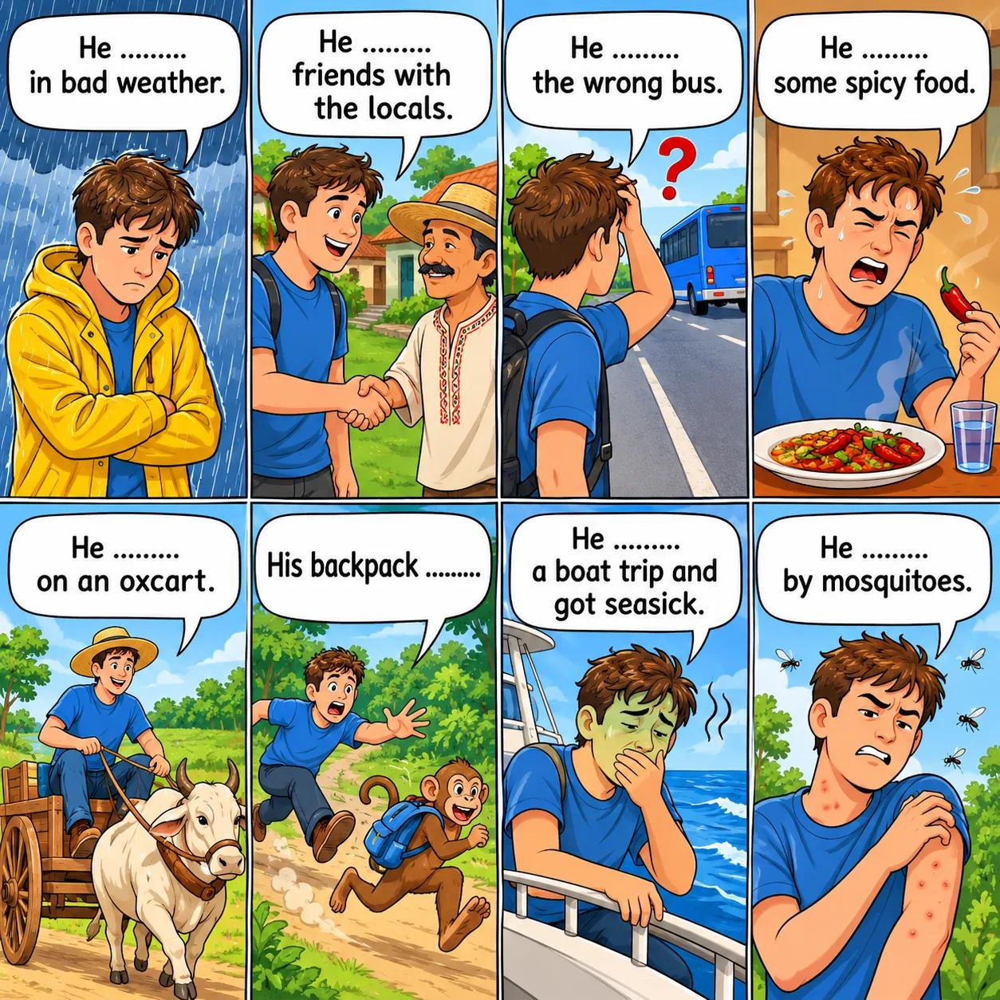

A: I once got caught in bad weather in Ireland. It rained a lot and it was very windy. What about you?
B: I went on a boat trip around the Caribbean once and I got seasick! It was horrible.
Hi, I'm John Thompson from Chicago, USA. I'm 19 years old, and I was travelling around the world all last year. I learnt so much about different cultures and I had some crazy experiences, too. I thought I'd share some of my adventures with you. I hope you enjoy them!
I was travelling in India last September. One day, I somehow caught the wrong bus while trying to get from Delhi to Agra to see the Taj Mahal. I ended up in a small village in the middle of nowhere! "Next bus back to Delhi... tomorrow," the bus driver told me. Just then, a man was passing by with an oxcart. The bus driver stopped him. Before I knew it, I was sitting on top of some sacks on the man's cart, and we were heading back to the city. Most of the way, it was raining, and mosquitoes were buzzing around the ox and biting me. Sanjit only spoke Hindi, but he was smiling and laughing all the way, and he even shared his lunch with me. It was very spicy but delicious. It took us four hours to reach Delhi! Despite the rain and mosquitoes, it was a lot of fun.
I had another crazy day while I was visiting the Phi Phi Islands in Thailand in March. One morning, I decided to go on a long-tail boat trip around the islands. Unfortunately, the wind was blowing strongly that day and before long, I was feeling very seasick. So, I was very relieved when we stopped at a place called 'Monkey Beach'. Hundreds of monkeys were running towards us as we got off the boat. But then, as I was feeding a piece of pineapple to one monkey, another grabbed my small backpack and quickly ran into the bushes with it! I tried to run after it, but it was too fast. The bag had my passport in it! I never saw my passport again. I had to get a new one from my embassy in Bangkok!
Listen to Sarah talking about her experience while travelling in Ecuador, and put the events in the order they happened (1-5).
We use Past Continuous to talk about actions in progress at a certain time in the past.
| Affirmative | Negative | Question |
|---|---|---|
| I was playing. You were playing. He/She/It was playing. We/You/They were playing. |
I wasn't playing. You weren't playing. He/She/It wasn't playing. We/You/They weren't playing. |
Was I playing? Were you playing? Was he/she/it playing? Were we/you/they playing? |
write, buy, ride, take (x2), play, watch, read, swim, cook, make, sing, dance, sleep, work
...at 9 o'clock last night.
...yesterday morning.
...at 10 o'clock this morning.
Model: At 9 o'clock last night, I was writing emails.